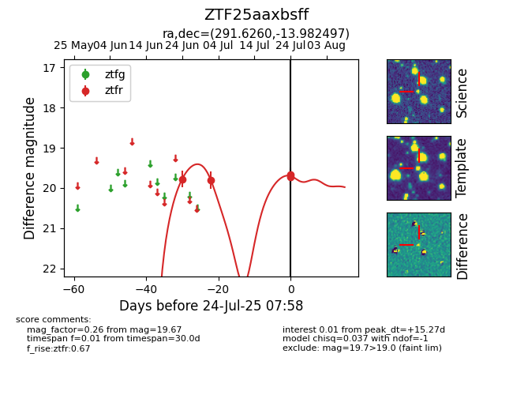

Target ZTF25aaxbsff at 2025-07-24 07:58, see:
FINK: fink-portal.org/ZTF25aaxbsff
Lasair: lasair-ztf.lsst.ac.uk/objects/ZTF25aaxbsff
ALeRCE: alerce.online/object/ZTF25aaxbsff
alt names
ZTF25aaxbsff (ztf,fink)
coordinates:
equatorial (ra, dec) = (291.6260,-13.98250)
galactic (l, b) = (24.1821,-13.99282)
photometry
last ztfr=19.67
4 ztfr detections
